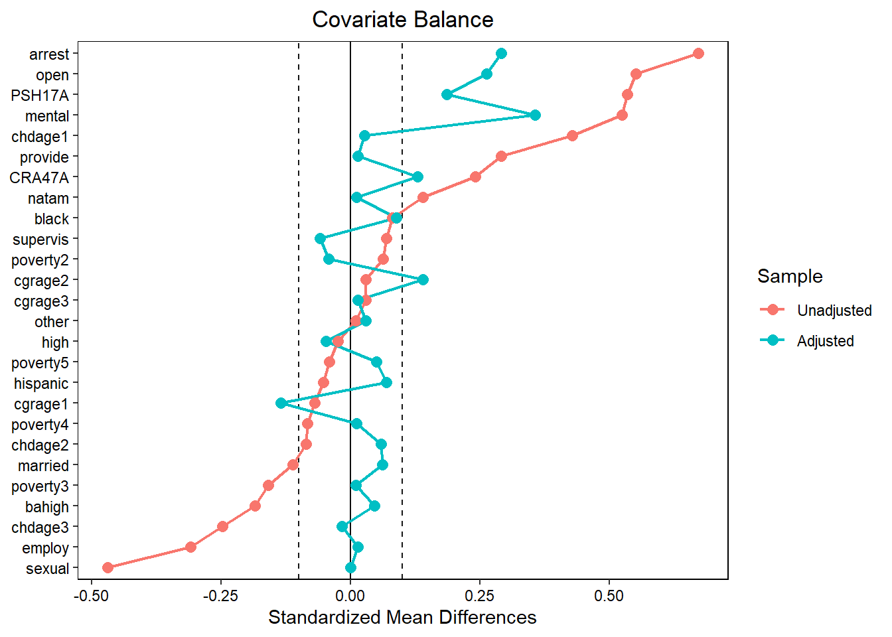
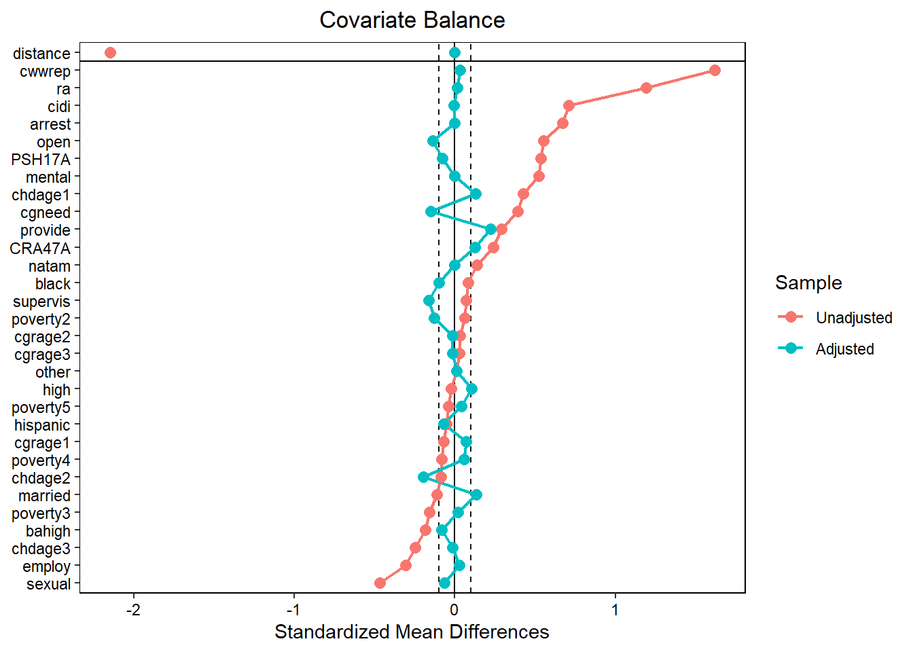
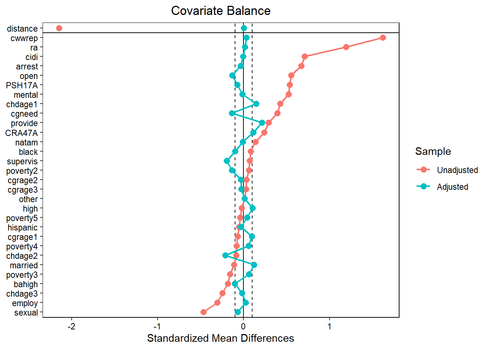
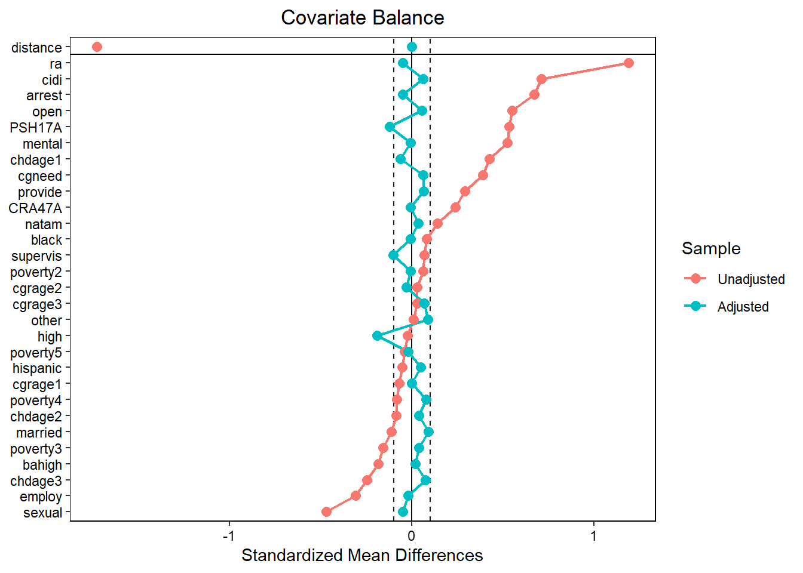
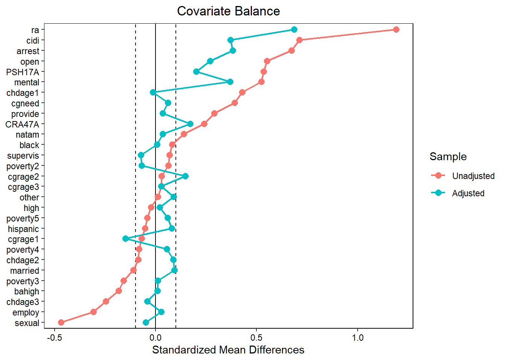
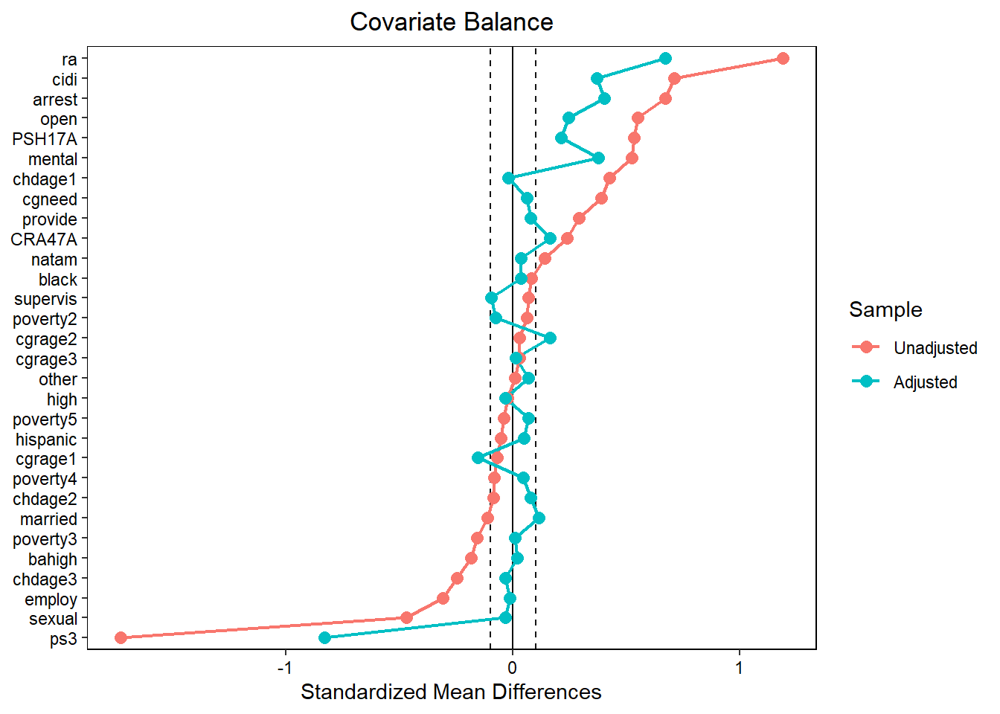

5 Section 5.8.1 Greedy Matching and Subsequent Analysis of Hazard Rates (SD & PS)
library(MatchIt)
library(cobalt)
library(gmodels)
library(ggplot2)
library(survival)
library(survMisc)
library(survminer)
library(knitr)
library(kableExtra)
library(tidyverse)
select <- dplyr::select5.1 Preparation
# load data
d <- haven::read_dta("data/Data_Chapter5/chpt5_1_original.dta")
# make convenient objects
## names of match vars
match_vars1 <- colnames(select(d, PSH17A:other, -aodserv))
match_vars2 <- colnames(select(d, PSH17A:cwwrep, -aodserv))
match_vars3 <- colnames(select(d, PSH17A:cgneed, -aodserv))
## PS formula
psform1 <- f.build("aodserv", match_vars1)
psform2 <- f.build("aodserv", match_vars2)
psform3 <- f.build("aodserv", match_vars3)
# Function for balance check
get_bal <- function(out)
cobalt::love.plot(out,
binary = "std",
stats = c("mean.diffs"),
threshold = c(.1),
var.order = "unadjusted",
line = TRUE
)5.2 Propensity Score Estimation
# logistic 1
psmodel1 <- glm(psform1, data = d, family = binomial())
summary(psmodel1)##
## Call:
## glm(formula = psform1, family = binomial(), data = d)
##
## Deviance Residuals:
## Min 1Q Median 3Q Max
## -1.6438 -0.4514 -0.2918 -0.1913 2.9941
##
## Coefficients:
## Estimate Std. Error z value Pr(>|z|)
## (Intercept) -3.08390 0.55184 -5.588 2.29e-08 ***
## PSH17A 1.36643 0.16501 8.281 < 2e-16 ***
## CRA47A -0.05870 0.14756 -0.398 0.690761
## married 0.05537 0.16348 0.339 0.734845
## high -0.16055 0.15412 -1.042 0.297546
## bahigh -0.42414 0.21172 -2.003 0.045142 *
## poverty2 -0.14588 0.17830 -0.818 0.413269
## poverty3 -0.32912 0.23375 -1.408 0.159126
## poverty4 -0.12501 0.26138 -0.478 0.632463
## poverty5 0.09470 0.25266 0.375 0.707812
## employ -0.17456 0.14975 -1.166 0.243744
## open 0.80711 0.15888 5.080 3.77e-07 ***
## black 0.16694 0.16609 1.005 0.314827
## hispanic 0.29803 0.21530 1.384 0.166285
## natam 0.88220 0.26281 3.357 0.000788 ***
## cgrage1 -1.22543 0.44893 -2.730 0.006340 **
## cgrage2 -0.75447 0.46083 -1.637 0.101588
## cgrage3 -0.71892 0.51347 -1.400 0.161476
## chdage1 1.08795 0.22546 4.826 1.40e-06 ***
## chdage2 0.34131 0.26566 1.285 0.198879
## chdage3 0.23326 0.23314 1.001 0.317061
## mental 0.73412 0.14429 5.088 3.62e-07 ***
## arrest 1.03357 0.14070 7.346 2.05e-13 ***
## sexual -0.66734 0.33500 -1.992 0.046365 *
## provide 0.44020 0.20441 2.154 0.031277 *
## supervis 0.10838 0.20141 0.538 0.590524
## other 0.21122 0.24002 0.880 0.378865
## ---
## Signif. codes: 0 '***' 0.001 '**' 0.01 '*' 0.05 '.' 0.1 ' ' 1
##
## (Dispersion parameter for binomial family taken to be 1)
##
## Null deviance: 1888.8 on 2757 degrees of freedom
## Residual deviance: 1508.5 on 2731 degrees of freedom
## AIC: 1562.5
##
## Number of Fisher Scoring iterations: 6d$p1 <- predict(psmodel1, newdata = d, type = "response")
d$ps1 <- log((1 - d$p1) / (d$p1))
# logistic 2
psmodel2 <- glm(psform2, data = d, family = binomial())
summary(psmodel2)##
## Call:
## glm(formula = psform2, family = binomial(), data = d)
##
## Deviance Residuals:
## Min 1Q Median 3Q Max
## -2.5328 -0.2371 -0.1569 -0.1127 3.1786
##
## Coefficients:
## Estimate Std. Error z value Pr(>|z|)
## (Intercept) -3.93287 0.76855 -5.117 3.10e-07 ***
## PSH17A 0.35830 0.23549 1.522 0.128134
## CRA47A -0.19514 0.19862 -0.982 0.325865
## married 0.39739 0.22083 1.800 0.071929 .
## high 0.07841 0.21128 0.371 0.710541
## bahigh -0.06395 0.28667 -0.223 0.823466
## poverty2 -0.20632 0.24105 -0.856 0.392039
## poverty3 -0.22029 0.30907 -0.713 0.476000
## poverty4 -0.09863 0.35644 -0.277 0.782015
## poverty5 -0.27714 0.34128 -0.812 0.416760
## employ -0.32332 0.20119 -1.607 0.108037
## open 0.16749 0.20614 0.812 0.416518
## black -0.36731 0.23130 -1.588 0.112285
## hispanic -0.08868 0.30319 -0.292 0.769914
## natam 0.76930 0.36310 2.119 0.034115 *
## cgrage1 -0.92469 0.64331 -1.437 0.150606
## cgrage2 -0.45959 0.65310 -0.704 0.481620
## cgrage3 -0.42056 0.71567 -0.588 0.556773
## chdage1 0.73922 0.29343 2.519 0.011761 *
## chdage2 0.22307 0.34508 0.646 0.518011
## chdage3 0.17889 0.30061 0.595 0.551785
## mental 0.20260 0.19791 1.024 0.305979
## arrest 0.76652 0.18897 4.056 4.99e-05 ***
## sexual -0.42210 0.40478 -1.043 0.297052
## provide -0.19100 0.27996 -0.682 0.495085
## supervis -0.20181 0.27020 -0.747 0.455120
## other -0.56899 0.34079 -1.670 0.094998 .
## ra 1.38794 0.19334 7.179 7.04e-13 ***
## cidi 0.97079 0.19578 4.959 7.10e-07 ***
## cgneed 1.10853 0.31760 3.490 0.000482 ***
## cwwrep 3.39786 0.20240 16.788 < 2e-16 ***
## ---
## Signif. codes: 0 '***' 0.001 '**' 0.01 '*' 0.05 '.' 0.1 ' ' 1
##
## (Dispersion parameter for binomial family taken to be 1)
##
## Null deviance: 1888.77 on 2757 degrees of freedom
## Residual deviance: 889.14 on 2727 degrees of freedom
## AIC: 951.14
##
## Number of Fisher Scoring iterations: 7d$p2 <- predict(psmodel2, newdata = d, type = "response")
d$ps2 <- log((1 - d$p2) / (d$p2))
# logistic 3
psmodel3 <- glm(psform3, data = d, family = binomial())
summary(psmodel3)##
## Call:
## glm(formula = psform3, family = binomial(), data = d)
##
## Deviance Residuals:
## Min 1Q Median 3Q Max
## -2.4604 -0.3366 -0.2096 -0.1429 3.0240
##
## Coefficients:
## Estimate Std. Error z value Pr(>|z|)
## (Intercept) -3.79884 0.62666 -6.062 1.34e-09 ***
## PSH17A 0.62992 0.19120 3.295 0.000986 ***
## CRA47A -0.08252 0.16271 -0.507 0.612045
## married 0.18045 0.18464 0.977 0.328416
## high -0.21000 0.17289 -1.215 0.224504
## bahigh -0.25255 0.23458 -1.077 0.281664
## poverty2 -0.08765 0.19929 -0.440 0.660077
## poverty3 -0.22084 0.26155 -0.844 0.398466
## poverty4 0.09489 0.29126 0.326 0.744579
## poverty5 0.01112 0.28038 0.040 0.968356
## employ -0.16203 0.16607 -0.976 0.329231
## open 0.50934 0.17368 2.933 0.003362 **
## black 0.02147 0.18840 0.114 0.909258
## hispanic 0.33221 0.24475 1.357 0.174675
## natam 0.81935 0.29513 2.776 0.005499 **
## cgrage1 -1.21001 0.50236 -2.409 0.016012 *
## cgrage2 -0.81256 0.51415 -1.580 0.114015
## cgrage3 -0.40958 0.56728 -0.722 0.470294
## chdage1 1.02718 0.24950 4.117 3.84e-05 ***
## chdage2 0.35775 0.29296 1.221 0.222021
## chdage3 0.19034 0.25683 0.741 0.458610
## mental 0.63288 0.16118 3.927 8.62e-05 ***
## arrest 0.85781 0.15751 5.446 5.15e-08 ***
## sexual -0.42152 0.36142 -1.166 0.243493
## provide 0.27552 0.22986 1.199 0.230659
## supervis -0.01958 0.22708 -0.086 0.931271
## other 0.03372 0.26971 0.125 0.900518
## ra 2.02604 0.15716 12.892 < 2e-16 ***
## cidi 0.91196 0.15992 5.703 1.18e-08 ***
## cgneed 1.21045 0.26045 4.648 3.36e-06 ***
## ---
## Signif. codes: 0 '***' 0.001 '**' 0.01 '*' 0.05 '.' 0.1 ' ' 1
##
## (Dispersion parameter for binomial family taken to be 1)
##
## Null deviance: 1888.8 on 2757 degrees of freedom
## Residual deviance: 1226.5 on 2728 degrees of freedom
## AIC: 1286.5
##
## Number of Fisher Scoring iterations: 6d$p3 <- predict(psmodel3, newdata = d, type = "response")
d$ps3 <- log((1 - d$p3) / (d$p3))5.3 Bivariate Comparisons
d %>%
select(married, educ, pov, employ, open, race, chdage, cgage, CRA47A, mental,
arrest, PSH17A, maltx, ra, cidi, cgneed, cwwrep, aodserv) %>%
pivot_longer(-aodserv, names_to = "variable") %>%
group_by(variable) %>%
nest() %>%
mutate(bivariate.test = map(data, ~chisq.test(.$aodserv, .$value, correct = F))) %>%
mutate(statistic = map(bivariate.test, ~round(.$statistic, 3))) %>%
mutate(p.value = map(bivariate.test, ~round(.$p.value, 3))) %>%
unnest(cols = c(statistic, p.value)) %>%
select(variable, statistic, p.value)## # A tibble: 17 x 3
## # Groups: variable [17]
## variable statistic p.value
## <chr> <dbl> <dbl>
## 1 married 2.97 0.085
## 2 educ 10.5 0.005
## 3 pov 11.3 0.023
## 4 employ 23.1 0
## 5 open 58.4 0
## 6 race 11.5 0.009
## 7 chdage 55.4 0
## 8 cgage 3.56 0.313
## 9 CRA47A 17.5 0
## 10 mental 92.5 0
## 11 arrest 127. 0
## 12 PSH17A 179. 0
## 13 maltx 49.7 0
## 14 ra 585. 0
## 15 cidi 157. 0
## 16 cgneed 139. 0
## 17 cwwrep 1240. 0Bivariate tests with contingency tables can also be accomplished with:
gmodels::CrossTable(d$married, d$aodserv, prop.c = FALSE, prop.t = FALSE, prop.chisq = FALSE, chisq = TRUE)5.4 PSM based on Logistic regression & Covariate Balcance Check
Note: The matching results here are slightly different from the results in STATA. With R, we also prefer to use plots to check balances, which is different from the approach in STATA.
5.4.1 Scheme 1 - Nearest neighbor within caliper .25*SD
# PSM based on Logistic regression 1 & Covariate Balance Check
set.seed(100)
m_nc1_1.out <-
matchit(psform1,
data = d,
method = "nearest",
distance = d$ps1,
m.order = "random",
caliper = .25,
replace = T
)
m_nc1_1.out## A matchit object
## - method: Variable ratio 1:1 nearest neighbor matching with replacement
## - distance: User-defined [caliper]
## - caliper: <distance> (0.311)
## - number of obs.: 2758 (original), 527 (matched)
## - target estimand: ATT
## - covariates: PSH17A, CRA47A, married, high, bahigh, poverty2, poverty3, poverty4, poverty5, employ, open, black, hispanic, natam, cgrage1, cgrage2, cgrage3, chdage1, chdage2, chdage3, mental, arrest, sexual, provide, supervis, otherm_nc1_1.data <- MatchIt::match.data(m_nc1_1.out)
get_bal(m_nc1_1.out)5.4.2 Scheme 2 - Nearest neighbor within caliper .1*SD
# Note: Unlike Stata, the default caliper setting in matchit() is in standard deviation units (i.e., caliper = 0.1 is 0.1*SD)
set.seed(100)
m_nc1_2.out <-
matchit(psform1,
data = d,
method = "nearest",
distance = d$ps1,
m.order = "random",
caliper = .1,
replace = T
)
m_nc1_2.out## A matchit object
## - method: Variable ratio 1:1 nearest neighbor matching with replacement
## - distance: User-defined [caliper]
## - caliper: <distance> (0.124)
## - number of obs.: 2758 (original), 527 (matched)
## - target estimand: ATT
## - covariates: PSH17A, CRA47A, married, high, bahigh, poverty2, poverty3, poverty4, poverty5, employ, open, black, hispanic, natam, cgrage1, cgrage2, cgrage3, chdage1, chdage2, chdage3, mental, arrest, sexual, provide, supervis, otherm_nc1_2.data <- match.data(m_nc1_2.out)
get_bal(m_nc1_2.out)
5.4.3 Scheme 3 - Mahalanobis without propensity score
set.seed(100)
m_m1.out <- matchit(psform1,
data = d,
distance = "mahalanobis",
m.order = "random"
)
m_m1.out## A matchit object
## - method: Variable ratio 1:1 nearest neighbor matching without replacement
## - distance: Mahalanobis
## - number of obs.: 2758 (original), 596 (matched)
## - target estimand: ATT
## - covariates: PSH17A, CRA47A, married, high, bahigh, poverty2, poverty3, poverty4, poverty5, employ, open, black, hispanic, natam, cgrage1, cgrage2, cgrage3, chdage1, chdage2, chdage3, mental, arrest, sexual, provide, supervis, otherm_m1.data <- match.data(m_m1.out)
get_bal(m_m1.out)
5.4.4 Scheme 4 - Mahalanobis with propensity score
match_vars1m <- colnames(select(d, PSH17A:other, ps1, -aodserv))
psform1m <- f.build("aodserv", match_vars1m)
set.seed(100)
m_mp1.out <- matchit(psform1m,
data = d,
distance = "mahalanobis"
)
m_mp1.out## A matchit object
## - method: Variable ratio 1:1 nearest neighbor matching without replacement
## - distance: Mahalanobis
## - number of obs.: 2758 (original), 596 (matched)
## - target estimand: ATT
## - covariates: PSH17A, CRA47A, married, high, bahigh, poverty2, poverty3, poverty4, poverty5, employ, open, black, hispanic, natam, cgrage1, cgrage2, cgrage3, chdage1, chdage2, chdage3, mental, arrest, sexual, provide, supervis, other, ps1m_mp1.data <- match.data(m_mp1.out)
get_bal(m_mp1.out)5.5 PSM based on Logistic regression 2
5.5.1 Scheme 5 - Nearest neighbor within caliper .25*SD
set.seed(100)
m_nc2_1.out <-
matchit(psform2,
data = d,
method = "nearest",
distance = d$ps2,
m.order = "random",
caliper = .25,
replace = T
)
m_nc2_1.out## A matchit object
## - method: Variable ratio 1:1 nearest neighbor matching with replacement
## - distance: User-defined [caliper]
## - caliper: <distance> (0.49)
## - number of obs.: 2758 (original), 424 (matched)
## - target estimand: ATT
## - covariates: PSH17A, CRA47A, married, high, bahigh, poverty2, poverty3, poverty4, poverty5, employ, open, black, hispanic, natam, cgrage1, cgrage2, cgrage3, chdage1, chdage2, chdage3, mental, arrest, sexual, provide, supervis, other, ra, cidi, cgneed, cwwrepm_nc2_1.data <- match.data(m_nc2_1.out)
get_bal(m_nc2_1.out)
5.5.2 Scheme 6 - Nearest neighbor within caliper .1*SD (Note: caliper in MatchIt is not real data)
set.seed(100)
m_nc2_2.out <-
matchit(psform2,
data = d,
method = "nearest",
distance = d$ps2,
m.order = "random",
caliper = .1,
replace = T
)
m_nc2_2.out## A matchit object
## - method: Variable ratio 1:1 nearest neighbor matching with replacement
## - distance: User-defined [caliper]
## - caliper: <distance> (0.196)
## - number of obs.: 2758 (original), 417 (matched)
## - target estimand: ATT
## - covariates: PSH17A, CRA47A, married, high, bahigh, poverty2, poverty3, poverty4, poverty5, employ, open, black, hispanic, natam, cgrage1, cgrage2, cgrage3, chdage1, chdage2, chdage3, mental, arrest, sexual, provide, supervis, other, ra, cidi, cgneed, cwwrepm_mp2.data <- match.data(m_nc2_2.out)
get_bal(m_nc2_2.out)
5.5.3 Scheme 7 - Mahalanobis without propensity score
set.seed(100)
m_m2.out <- matchit(psform2,
data = d,
distance = "mahalanobis",
m.order = "random"
)
m_m2.out## A matchit object
## - method: Variable ratio 1:1 nearest neighbor matching without replacement
## - distance: Mahalanobis
## - number of obs.: 2758 (original), 596 (matched)
## - target estimand: ATT
## - covariates: PSH17A, CRA47A, married, high, bahigh, poverty2, poverty3, poverty4, poverty5, employ, open, black, hispanic, natam, cgrage1, cgrage2, cgrage3, chdage1, chdage2, chdage3, mental, arrest, sexual, provide, supervis, other, ra, cidi, cgneed, cwwrepm_m2.data <- match.data(m_m2.out)
get_bal(m_m2.out)5.5.4 Scheme 8 - Mahalanobis with propensity score
vars2m <- colnames(select(d, PSH17A:cwwrep, ps2, -aodserv))
psform2m <- f.build("aodserv", vars2m)
set.seed(100)
m_mp2.out <- matchit(psform2m,
data = d,
distance = "mahalanobis"
)
m_mp2.out
m_mp2.data <- match.data(m_mp2.out)
get_bal(m_mp2.out)5.6 PSM based on Logistic regression 3
5.6.1 Scheme 9 - Nearest neighbor within caliper .25*SD
set.seed(100)
m_nc3_1.out <-
matchit(psform3,
data = d,
method = "nearest",
distance = d$ps3,
m.order = "random",
caliper = .25,
replace = T
)
m_nc3_1.out## A matchit object
## - method: Variable ratio 1:1 nearest neighbor matching with replacement
## - distance: User-defined [caliper]
## - caliper: <distance> (0.401)
## - number of obs.: 2758 (original), 494 (matched)
## - target estimand: ATT
## - covariates: PSH17A, CRA47A, married, high, bahigh, poverty2, poverty3, poverty4, poverty5, employ, open, black, hispanic, natam, cgrage1, cgrage2, cgrage3, chdage1, chdage2, chdage3, mental, arrest, sexual, provide, supervis, other, ra, cidi, cgneedm_nc3_1.data <- match.data(m_nc3_1.out)
get_bal(m_nc3_1.out)5.6.2 Scheme 10 - Nearest neighbor within caliper .1*SD
set.seed(100)
m_nc3_2.out <-
matchit(psform3,
data = d,
method = "nearest",
distance = d$ps3,
m.order = "random",
caliper = .1,
replace = T
)
m_nc3_2.out## A matchit object
## - method: Variable ratio 1:1 nearest neighbor matching with replacement
## - distance: User-defined [caliper]
## - caliper: <distance> (0.16)
## - number of obs.: 2758 (original), 491 (matched)
## - target estimand: ATT
## - covariates: PSH17A, CRA47A, married, high, bahigh, poverty2, poverty3, poverty4, poverty5, employ, open, black, hispanic, natam, cgrage1, cgrage2, cgrage3, chdage1, chdage2, chdage3, mental, arrest, sexual, provide, supervis, other, ra, cidi, cgneedm_nc3_2.data <- match.data(m_nc3_2.out)
get_bal(m_nc3_2.out)
5.6.3 Scheme 11 - Mahalanobis without propensity score
set.seed(100)
m_m3.out <- matchit(psform3,
data = d,
distance = "mahalanobis",
m.order = "random"
)
m_m3.out## A matchit object
## - method: Variable ratio 1:1 nearest neighbor matching without replacement
## - distance: Mahalanobis
## - number of obs.: 2758 (original), 596 (matched)
## - target estimand: ATT
## - covariates: PSH17A, CRA47A, married, high, bahigh, poverty2, poverty3, poverty4, poverty5, employ, open, black, hispanic, natam, cgrage1, cgrage2, cgrage3, chdage1, chdage2, chdage3, mental, arrest, sexual, provide, supervis, other, ra, cidi, cgneedm_m3.data <- match.data(m_m3.out)
get_bal(m_m3.out)
5.6.4 Scheme 12 - Mahalanobis with propensity score
match_vars3m <- colnames(select(d, PSH17A:cgneed, ps3, -aodserv))
psform3m <- f.build("aodserv", match_vars3m)
set.seed(100)
m_mp3.out <- matchit(psform3m,
data = d,
distance = "mahalanobis"
)
m_mp3.out## A matchit object
## - method: Variable ratio 1:1 nearest neighbor matching without replacement
## - distance: Mahalanobis
## - number of obs.: 2758 (original), 596 (matched)
## - target estimand: ATT
## - covariates: PSH17A, CRA47A, married, high, bahigh, poverty2, poverty3, poverty4, poverty5, employ, open, black, hispanic, natam, cgrage1, cgrage2, cgrage3, chdage1, chdage2, chdage3, mental, arrest, sexual, provide, supervis, other, ra, cidi, cgneed, ps3m_mp3.data <- match.data(m_mp3.out)
get_bal(m_mp3.out)
5.7 Bivariate test after matching
# Check balance using chi-squared tests
check_balance <- function(df) {
# List of covariates to check balance
covs <- c("married", "high", "bahigh", "poverty2", "poverty3",
"poverty4", "poverty5", "employ", "open", "black", "hispanic",
"natam", "cgrage1", "cgrage2", "cgrage3",
"chdage1", "chdage2", "chdage3", "CRA47A", "mental",
"arrest", "PSH17A", "sexual", "provide", "supervis",
"other", "ra", "cidi", "cgneed", "cwwrep")
# Function to calculate chisq.test p-values
calc <- function(cov) {
return(data.frame(covariate = cov,
p = chisq.test(df[cov], df$aodserv)$p.value))
}
# Calculate chisq.test for each covariate
results <- map_dfr(covs, calc) %>%
mutate(sig = ifelse(p < 0.05, "sig", "not sig")) %>%
mutate(p = round(p, 2))
# Get covariates that did not overlap sufficiently (p < .05)
results_sig <- results %>%
filter(sig == "sig")
# Return results
return(list(table = results, sig = toupper(results_sig$covariate)))
}# Combine tables 5.5 and 5.6
get_table <- function(scheme, df) {
sig_vars <- ifelse(is.data.frame(df), paste(check_balance(df)$sig, collapse = ", "), df)
treated_n <- ifelse(is.data.frame(df), nrow(filter(df, aodserv == 1)), NA)
control_n <- ifelse(is.data.frame(df), nrow(filter(df, aodserv == 0)), NA)
results <- tibble(Scheme = scheme,
SigCovariates = sig_vars,
Treated = treated_n,
Control = control_n)
}
table_schemes <- c("Original", "1. Nearest 1-1", "2. Nearest 1-2",
"3. Mahalanobis 1", "4. Mahalanobis 1 with p-score added",
"5. Nearest 2-1", "6. Nearest 2-2",
"7. Mahalanobis 2", "8. Mahalanobis 2 with p-score added",
"9. Nearest 3-1", "10. Nearest 3-2",
"11. Mahalanobis 3", "12. Mahalanobis 3 with p-score added")
table_dfs <- list(d, m_nc1_1.data, m_nc1_2.data, # Original, Schemes 1, 2
m_m1.data, m_mp1.data, # Schemes 3, 4
m_nc2_1.data, m_mp2.data, # Schemes 5, 6
m_m2.data, m_mp2.data , # Schemes 7, 8
m_nc3_1.data, m_nc3_2.data, # Schemes 9, 10
m_m3.data, m_mp3.data) # Schemes 11, 12
table_summary <- map2_dfr(table_schemes, table_dfs, get_table)
options(knitr.kable.NA = "") # Do not display NAs in kable
table_summary %>%
kbl(format = "html",
col.names = c("Scheme",
"Covariate Distributions Did Not Overlap Sufficiently: Covariates Significant After Matching p < .05",
"Treated", "Control")) %>%
add_header_above(c(" " = 2, "N of the New Sample" = 2))| Scheme | Covariate Distributions Did Not Overlap Sufficiently: Covariates Significant After Matching p < .05 | Treated | Control |
|---|---|---|---|
| Original | BAHIGH, POVERTY3, EMPLOY, OPEN, NATAM, CHDAGE1, CHDAGE3, CRA47A, MENTAL, ARREST, PSH17A, SEXUAL, PROVIDE, RA, CIDI, CGNEED, CWWREP | 298 | 2460 |
|
RA, CIDI, CGNEED, CWWREP | 295 | 232 |
|
RA, CIDI, CGNEED, CWWREP | 295 | 232 |
|
OPEN, MENTAL, ARREST, PSH17A, RA, CIDI, CGNEED, CWWREP | 298 | 298 |
|
OPEN, MENTAL, ARREST, PSH17A, RA, CIDI, CGNEED, CWWREP | 298 | 298 |
|
RA, CWWREP | 294 | 130 |
|
RA, CWWREP | 287 | 130 |
|
OPEN, CRA47A, MENTAL, ARREST, PSH17A, RA, CIDI, CWWREP | 298 | 298 |
|
RA, CWWREP | 287 | 130 |
|
CIDI, CWWREP | 298 | 196 |
|
CWWREP | 295 | 196 |
|
OPEN, CRA47A, MENTAL, ARREST, PSH17A, RA, CIDI, CWWREP | 298 | 298 |
|
OPEN, CGRAGE2, MENTAL, ARREST, PSH17A, RA, CIDI, CWWREP | 298 | 298 |
5.8 Kaplan-Meier and significance test of difference on survivor function
5.8.1 All
# all
ds <- haven::read_dta("data/Data_Chapter5/svl_all.dta")
## KM survival analysis
fit <- survfit(Surv(durm, rrpt) ~ aodserv, data = ds)
fit## Call: survfit(formula = Surv(durm, rrpt) ~ aodserv, data = ds)
##
## n events median 0.95LCL 0.95UCL
## aodserv=0 2429 448 NA NA NA
## aodserv=1 294 84 NA NA NAquantile(fit, probs = 0.15)## $quantile
## 15
## aodserv=0 13.552092
## aodserv=1 7.645611
##
## $lower
## 15
## aodserv=0 12.600492
## aodserv=1 5.972108
##
## $upper
## 15
## aodserv=0 15.06153
## aodserv=1 10.43478## Log-rank or Mantel-Haenszel test
fit.test <- survival::survdiff(Surv(durm, rrpt) ~ aodserv, data = ds, rho = 0)
fit.test## Call:
## survival::survdiff(formula = Surv(durm, rrpt) ~ aodserv, data = ds,
## rho = 0)
##
## N Observed Expected (O-E)^2/E (O-E)^2/V
## aodserv=0 2429 448 478.2 1.91 18.9
## aodserv=1 294 84 53.8 16.95 18.9
##
## Chisq= 18.9 on 1 degrees of freedom, p= 1e-05comp(ten(fit)) # the first n row is the Gehan-Breslow generalized Wilcoxon test## Q Var Z pNorm
## 1 3.0201e+01 4.8338e+01 4.3440 6
## n 7.5476e+04 2.9252e+08 4.4130 2
## sqrtN 1.5091e+03 1.1865e+05 4.3812 5
## S1 2.7758e+01 3.9630e+01 4.4094 4
## S2 2.7747e+01 3.9597e+01 4.4094 3
## FH_p=1_q=1 2.1482e+00 4.3656e-01 3.2513 1
## maxAbsZ Var Q pSupBr
## 1 3.0201e+01 4.8338e+01 4.3440 6
## n 7.5476e+04 2.9252e+08 4.4130 2
## sqrtN 1.5091e+03 1.1865e+05 4.3812 5
## S1 2.7758e+01 3.9630e+01 4.4094 4
## S2 2.7747e+01 3.9597e+01 4.4094 3
## FH_p=1_q=1 2.1482e+00 4.3656e-01 3.2513 1## plot
ggsurvplot(fit, data = ds, pval = F)5.8.2 Scheme 1
ds1 <- haven::read_dta("data/Data_Chapter5/svl_1.dta")
## KM survival analysis
fit1 <- survfit(Surv(durm, rrpt) ~ aodserv, data = ds1)
fit1## Call: survfit(formula = Surv(durm, rrpt) ~ aodserv, data = ds1)
##
## 9 observations deleted due to missingness
## n events median 0.95LCL 0.95UCL
## aodserv=0 277 73 NA NA NA
## aodserv=1 278 79 NA NA NAquantile(fit1, probs = 0.15)## $quantile
## 15
## aodserv=0 9.483183
## aodserv=1 7.448728
##
## $lower
## 15
## aodserv=0 7.186218
## aodserv=1 5.742412
##
## $upper
## 15
## aodserv=0 12.17391
## aodserv=1 10.53322## Log-rank or Mantel-Haenszel test
fit1.test <- survdiff(Surv(durm, rrpt) ~ aodserv, data = ds1, rho = 0)
fit1.test## Call:
## survdiff(formula = Surv(durm, rrpt) ~ aodserv, data = ds1, rho = 0)
##
## n=555, 9 observations deleted due to missingness.
##
## N Observed Expected (O-E)^2/E (O-E)^2/V
## aodserv=0 277 73 76.9 0.194 0.394
## aodserv=1 278 79 75.1 0.199 0.394
##
## Chisq= 0.4 on 1 degrees of freedom, p= 0.5comp(ten(fit1)) ## Q Var Z pNorm
## 1 3.8659e+00 3.7981e+01 0.627292 5
## n 2.1150e+03 8.7738e+06 0.714029 3
## sqrtN 9.0488e+01 1.8173e+04 0.671248 4
## S1 3.8181e+00 2.8463e+01 0.715660 2
## S2 3.8111e+00 2.8345e+01 0.715832 1
## FH_p=1_q=1 7.1132e-02 5.9633e-01 0.092114 6
## maxAbsZ Var Q pSupBr
## 1 6.2567e+00 3.7981e+01 1.01522 5
## n 3.2300e+03 8.7738e+06 1.09046 1
## sqrtN 1.4209e+02 1.8173e+04 1.05401 4
## S1 5.8074e+00 2.8463e+01 1.08853 3
## S2 5.7962e+00 2.8345e+01 1.08868 2
## FH_p=1_q=1 4.7369e-01 5.9633e-01 0.61341 6## plot
ggsurvplot(fit1, data = ds1, pval = F)5.8.3 Scheme 2
ds2 <- haven::read_dta("data/Data_Chapter5/svl_2.dta")
## KM survival analysis
fit2 <- survfit(Surv(durm, rrpt) ~ aodserv, data = ds2)
fit2## Call: survfit(formula = Surv(durm, rrpt) ~ aodserv, data = ds2)
##
## 9 observations deleted due to missingness
## n events median 0.95LCL 0.95UCL
## aodserv=0 276 70 NA NA NA
## aodserv=1 277 79 NA NA NAquantile(fit2, probs = 0.15)## $quantile
## 15
## aodserv=0 10.205086
## aodserv=1 7.645611
##
## $lower
## 15
## aodserv=0 7.711239
## aodserv=1 5.742412
##
## $upper
## 15
## aodserv=0 12.92863
## aodserv=1 10.53322## Log-rank or Mantel-Haenszel test
fit2.test <- survdiff(Surv(durm, rrpt) ~ aodserv, data = ds2, rho = 0)
fit2.test## Call:
## survdiff(formula = Surv(durm, rrpt) ~ aodserv, data = ds2, rho = 0)
##
## n=553, 9 observations deleted due to missingness.
##
## N Observed Expected (O-E)^2/E (O-E)^2/V
## aodserv=0 276 70 75.5 0.401 0.814
## aodserv=1 277 79 73.5 0.412 0.814
##
## Chisq= 0.8 on 1 degrees of freedom, p= 0.4comp(ten(fit2)) ## Q Var Z pNorm
## 1 5.5027e+00 3.7230e+01 0.90183 5
## n 2.8410e+03 8.5777e+06 0.97003 3
## sqrtN 1.2491e+02 1.7793e+04 0.93643 4
## S1 5.1543e+00 2.8035e+01 0.97345 2
## S2 5.1443e+00 2.7919e+01 0.97359 1
## FH_p=1_q=1 3.0002e-01 5.7032e-01 0.39727 6
## maxAbsZ Var Q pSupBr
## 1 7.2715e+00 3.7230e+01 1.19171 5
## n 3.7380e+03 8.5777e+06 1.27630 1
## sqrtN 1.6484e+02 1.7793e+04 1.23576 4
## S1 6.7453e+00 2.8035e+01 1.27394 3
## S2 6.7322e+00 2.7919e+01 1.27411 2
## FH_p=1_q=1 4.9779e-01 5.7032e-01 0.65915 6## plot
ggsurvplot(fit2, data = ds2, pval = F)5.8.4 Scheme 3
ds3 <- haven::read_dta("data/Data_Chapter5/svl_3.dta")
## KM survival analysis
fit3 <- survfit(Surv(durm, rrpt) ~ aodserv, data = ds3)
fit3## Call: survfit(formula = Surv(durm, rrpt) ~ aodserv, data = ds3)
##
## 9 observations deleted due to missingness
## n events median 0.95LCL 0.95UCL
## aodserv=0 261 52 NA NA NA
## aodserv=1 261 77 NA NA NAquantile(fit3, probs = 0.15)## $quantile
## 15
## aodserv=0 12.108285
## aodserv=1 7.645611
##
## $lower
## 15
## aodserv=0 10.205086
## aodserv=1 5.742412
##
## $upper
## 15
## aodserv=0 NA
## aodserv=1 10.63167## Log-rank or Mantel-Haenszel test
fit3.test <- survdiff(Surv(durm, rrpt) ~ aodserv, data = ds3, rho = 0)
fit3.test## Call:
## survdiff(formula = Surv(durm, rrpt) ~ aodserv, data = ds3, rho = 0)
##
## n=522, 9 observations deleted due to missingness.
##
## N Observed Expected (O-E)^2/E (O-E)^2/V
## aodserv=0 261 52 66.7 3.23 6.69
## aodserv=1 261 77 62.3 3.45 6.69
##
## Chisq= 6.7 on 1 degrees of freedom, p= 0.01comp(ten(fit3)) ## Q Var Z pNorm
## 1 1.4674e+01 3.2190e+01 2.5863 4
## n 6.7630e+03 6.7873e+06 2.5959 2
## sqrtN 3.1472e+02 1.4730e+04 2.5931 3
## S1 1.2955e+01 2.4836e+01 2.5995 1
## S2 1.2927e+01 2.4728e+01 2.5995 1
## FH_p=1_q=1 1.4200e+00 4.3025e-01 2.1649 5
## maxAbsZ Var Q pSupBr
## 1 1.4674e+01 3.2190e+01 2.5863 4
## n 6.7630e+03 6.7873e+06 2.5959 2
## sqrtN 3.1472e+02 1.4730e+04 2.5931 3
## S1 1.2955e+01 2.4836e+01 2.5995 1
## S2 1.2927e+01 2.4728e+01 2.5995 1
## FH_p=1_q=1 1.4200e+00 4.3025e-01 2.1649 5## plot
ggsurvplot(fit3, data = ds3, pval = F)5.8.5 Scheme 4
ds4 <- haven::read_dta("data/Data_Chapter5/svl_4.dta")
## KM survival analysis
fit4 <- survfit(Surv(durm, rrpt) ~ aodserv, data = ds4)
fit4## Call: survfit(formula = Surv(durm, rrpt) ~ aodserv, data = ds4)
##
## 9 observations deleted due to missingness
## n events median 0.95LCL 0.95UCL
## aodserv=0 261 52 NA NA NA
## aodserv=1 261 75 NA NA NAquantile(fit4, probs = 0.15)## $quantile
## 15
## aodserv=0 12.108285
## aodserv=1 7.645611
##
## $lower
## 15
## aodserv=0 10.205086
## aodserv=1 5.578343
##
## $upper
## 15
## aodserv=0 NA
## aodserv=1 10.53322## Log-rank or Mantel-Haenszel test
fit4.test <- survdiff(Surv(durm, rrpt) ~ aodserv, data = ds4, rho = 0)
fit4.test## Call:
## survdiff(formula = Surv(durm, rrpt) ~ aodserv, data = ds4, rho = 0)
##
## n=522, 9 observations deleted due to missingness.
##
## N Observed Expected (O-E)^2/E (O-E)^2/V
## aodserv=0 261 52 65.6 2.82 5.85
## aodserv=1 261 75 61.4 3.02 5.85
##
## Chisq= 5.8 on 1 degrees of freedom, p= 0.02comp(ten(fit4)) ## Q Var Z pNorm
## 1 1.3613e+01 3.1696e+01 2.4181 5
## n 6.3540e+03 6.7105e+06 2.4528 3
## sqrtN 2.9383e+02 1.4535e+04 2.4372 4
## S1 1.2174e+01 2.4555e+01 2.4567 2
## S2 1.2148e+01 2.4448e+01 2.4568 1
## FH_p=1_q=1 1.1979e+00 4.1344e-01 1.8631 6
## maxAbsZ Var Q pSupBr
## 1 1.3613e+01 3.1696e+01 2.4181 5
## n 6.3540e+03 6.7105e+06 2.4528 3
## sqrtN 2.9383e+02 1.4535e+04 2.4372 4
## S1 1.2174e+01 2.4555e+01 2.4567 2
## S2 1.2148e+01 2.4448e+01 2.4568 1
## FH_p=1_q=1 1.1979e+00 4.1344e-01 1.8631 6## plot
ggsurvplot(fit4, data = ds4, pval = F)5.8.6 Scheme 5
ds5 <- haven::read_dta("data/Data_Chapter5/svl_5.dta")
## KM survival analysis
fit5 <- survfit(Surv(durm, rrpt) ~ aodserv, data = ds5)
fit5## Call: survfit(formula = Surv(durm, rrpt) ~ aodserv, data = ds5)
##
## 4 observations deleted due to missingness
## n events median 0.95LCL 0.95UCL
## aodserv=0 164 41 NA NA NA
## aodserv=1 160 48 NA NA NAquantile(fit5, probs = 0.15)## $quantile
## 15
## aodserv=0 9.515997
## aodserv=1 7.547170
##
## $lower
## 15
## aodserv=0 5.512715
## aodserv=1 5.053322
##
## $upper
## 15
## aodserv=0 13.35521
## aodserv=1 11.28794## Log-rank or Mantel-Haenszel test
fit5.test <- survdiff(Surv(durm, rrpt) ~ aodserv, data = ds5, rho = 0)
fit5.test## Call:
## survdiff(formula = Surv(durm, rrpt) ~ aodserv, data = ds5, rho = 0)
##
## n=324, 4 observations deleted due to missingness.
##
## N Observed Expected (O-E)^2/E (O-E)^2/V
## aodserv=0 164 41 45.6 0.461 0.946
## aodserv=1 160 48 43.4 0.484 0.946
##
## Chisq= 0.9 on 1 degrees of freedom, p= 0.3comp(ten(fit5)) ## Q Var Z pNorm
## 1 4.5849e+00 2.2226e+01 0.97251 2
## n 1.2030e+03 1.7512e+06 0.90906 6
## sqrtN 7.4286e+01 6.2104e+03 0.94264 3
## S1 3.7094e+00 1.6628e+01 0.90967 4
## S2 3.6953e+00 1.6511e+01 0.90943 5
## FH_p=1_q=1 7.1015e-01 3.4820e-01 1.20347 1
## maxAbsZ Var Q pSupBr
## 1 5.0699e+00 2.2226e+01 1.0754 2
## n 1.3460e+03 1.7512e+06 1.0171 4
## sqrtN 8.2656e+01 6.2104e+03 1.0488 3
## S1 4.1350e+00 1.6628e+01 1.0140 5
## S2 4.1195e+00 1.6511e+01 1.0138 6
## FH_p=1_q=1 7.6877e-01 3.4820e-01 1.3028 1## plot
ggsurvplot(fit5, data = ds5, pval = F)5.8.7 Scheme 6
ds6 <- haven::read_dta("data/Data_Chapter5/svl_6.dta")
## KM survival analysis
fit6 <- survfit(Surv(durm, rrpt) ~ aodserv, data = ds6)
fit6## Call: survfit(formula = Surv(durm, rrpt) ~ aodserv, data = ds6)
##
## 4 observations deleted due to missingness
## n events median 0.95LCL 0.95UCL
## aodserv=0 163 41 NA NA NA
## aodserv=1 159 47 NA NA NAquantile(fit6, probs = 0.15)## $quantile
## 15
## aodserv=0 9.515997
## aodserv=1 8.761280
##
## $lower
## 15
## aodserv=0 5.184578
## aodserv=1 5.250205
##
## $upper
## 15
## aodserv=0 13.35521
## aodserv=1 11.94422## Log-rank or Mantel-Haenszel test
fit6.test <- survdiff(Surv(durm, rrpt) ~ aodserv, data = ds6, rho = 0)
fit6.test## Call:
## survdiff(formula = Surv(durm, rrpt) ~ aodserv, data = ds6, rho = 0)
##
## n=322, 4 observations deleted due to missingness.
##
## N Observed Expected (O-E)^2/E (O-E)^2/V
## aodserv=0 163 41 44.9 0.340 0.696
## aodserv=1 159 47 43.1 0.355 0.696
##
## Chisq= 0.7 on 1 degrees of freedom, p= 0.4comp(ten(fit6)) ## Q Var Z pNorm
## 1 3.9103e+00 2.1982e+01 0.83402 2
## n 9.8500e+02 1.7122e+06 0.75277 6
## sqrtN 6.2073e+01 6.1069e+03 0.79431 3
## S1 3.0711e+00 1.6468e+01 0.75680 4
## S2 3.0590e+00 1.6351e+01 0.75649 5
## FH_p=1_q=1 6.6073e-01 3.4163e-01 1.13044 1
## maxAbsZ Var Q pSupBr
## 1 3.9564e+00 2.1982e+01 0.84386 2
## n 1.0310e+03 1.7122e+06 0.78792 4
## sqrtN 6.3915e+01 6.1069e+03 0.81788 3
## S1 3.1854e+00 1.6468e+01 0.78497 5
## S2 3.1732e+00 1.6351e+01 0.78476 6
## FH_p=1_q=1 6.6073e-01 3.4163e-01 1.13044 1## plot
ggsurvplot(fit6, data = ds6, pval = F)5.8.8 Scheme 7
ds7 <- haven::read_dta("data/Data_Chapter5/svl_7.dta")
## KM survival analysis
fit7 <- survfit(Surv(durm, rrpt) ~ aodserv, data = ds7)
fit7## Call: survfit(formula = Surv(durm, rrpt) ~ aodserv, data = ds7)
##
## 5 observations deleted due to missingness
## n events median 0.95LCL 0.95UCL
## aodserv=0 181 43 NA NA NA
## aodserv=1 178 50 NA NA NAquantile(fit7, probs = 0.15)## $quantile
## 15
## aodserv=0 9.909762
## aodserv=1 7.842494
##
## $lower
## 15
## aodserv=0 6.365874
## aodserv=1 5.742412
##
## $upper
## 15
## aodserv=0 13.65053
## aodserv=1 11.94422## Log-rank or Mantel-Haenszel test
fit7.test <- survdiff(Surv(durm, rrpt) ~ aodserv, data = ds7, rho = 0)
fit7.test## Call:
## survdiff(formula = Surv(durm, rrpt) ~ aodserv, data = ds7, rho = 0)
##
## n=359, 5 observations deleted due to missingness.
##
## N Observed Expected (O-E)^2/E (O-E)^2/V
## aodserv=0 181 43 47.3 0.384 0.782
## aodserv=1 178 50 45.7 0.397 0.782
##
## Chisq= 0.8 on 1 degrees of freedom, p= 0.4comp(ten(fit7)) ## Q Var Z pNorm
## 1 4.2622e+00 2.3240e+01 0.88412 2
## n 1.2360e+03 2.2889e+06 0.81697 6
## sqrtN 7.2516e+01 7.2654e+03 0.85075 3
## S1 3.4533e+00 1.7690e+01 0.82107 4
## S2 3.4415e+00 1.7578e+01 0.82084 5
## FH_p=1_q=1 6.3117e-01 3.3362e-01 1.09275 1
## maxAbsZ Var Q pSupBr
## 1 4.2622e+00 2.3240e+01 0.88412 2
## n 1.2360e+03 2.2889e+06 0.81697 6
## sqrtN 7.2516e+01 7.2654e+03 0.85075 3
## S1 3.4533e+00 1.7690e+01 0.82107 4
## S2 3.4415e+00 1.7578e+01 0.82084 5
## FH_p=1_q=1 6.3117e-01 3.3362e-01 1.09275 1## plot
ggsurvplot(fit7, data = ds7, pval = F)5.8.9 Scheme 8
ds8 <- haven::read_dta("data/Data_Chapter5/svl_8.dta")
## KM survival analysis
fit8 <- survfit(Surv(durm, rrpt) ~ aodserv, data = ds8)
fit8## Call: survfit(formula = Surv(durm, rrpt) ~ aodserv, data = ds8)
##
## 5 observations deleted due to missingness
## n events median 0.95LCL 0.95UCL
## aodserv=0 181 43 NA NA NA
## aodserv=1 178 49 NA NA NAquantile(fit8, probs = 0.15)## $quantile
## 15
## aodserv=0 9.909762
## aodserv=1 7.251846
##
## $lower
## 15
## aodserv=0 6.365874
## aodserv=1 5.217391
##
## $upper
## 15
## aodserv=0 13.65053
## aodserv=1 12.46924## Log-rank or Mantel-Haenszel test
fit8.test <- survdiff(Surv(durm, rrpt) ~ aodserv, data = ds8, rho = 0)
fit8.test## Call:
## survdiff(formula = Surv(durm, rrpt) ~ aodserv, data = ds8, rho = 0)
##
## n=359, 5 observations deleted due to missingness.
##
## N Observed Expected (O-E)^2/E (O-E)^2/V
## aodserv=0 181 43 46.9 0.317 0.645
## aodserv=1 178 49 45.1 0.328 0.645
##
## Chisq= 0.6 on 1 degrees of freedom, p= 0.4comp(ten(fit8)) ## Q Var Z pNorm
## 1 3.8510e+00 2.2987e+01 0.80320 1
## n 1.1720e+03 2.2716e+06 0.77761 6
## sqrtN 6.7077e+01 7.1991e+03 0.79055 3
## S1 3.2670e+00 1.7547e+01 0.77992 4
## S2 3.2563e+00 1.7436e+01 0.77983 5
## FH_p=1_q=1 4.5504e-01 3.2435e-01 0.79900 2
## maxAbsZ Var Q pSupBr
## 1 3.8510e+00 2.2987e+01 0.80320 1
## n 1.1720e+03 2.2716e+06 0.77761 6
## sqrtN 6.7077e+01 7.1991e+03 0.79055 3
## S1 3.2670e+00 1.7547e+01 0.77992 4
## S2 3.2563e+00 1.7436e+01 0.77983 5
## FH_p=1_q=1 4.5504e-01 3.2435e-01 0.79900 2## plot
ggsurvplot(fit8, data = ds8, pval = F)5.8.10 Scheme 9
ds9 <- haven::read_dta("data/Data_Chapter5/svl_9.dta")
## KM survival analysis
fit9 <- survfit(Surv(durm, rrpt) ~ aodserv, data = ds9)
fit9## Call: survfit(formula = Surv(durm, rrpt) ~ aodserv, data = ds9)
##
## 8 observations deleted due to missingness
## n events median 0.95LCL 0.95UCL
## aodserv=0 241 49 NA NA NA
## aodserv=1 241 69 NA NA NAquantile(fit9, probs = 0.15)## $quantile
## 15
## aodserv=0 12.698934
## aodserv=1 7.645611
##
## $lower
## 15
## aodserv=0 10.926989
## aodserv=1 5.578343
##
## $upper
## 15
## aodserv=0 17.26005
## aodserv=1 10.43478## Log-rank or Mantel-Haenszel test
fit9.test <- survdiff(Surv(durm, rrpt) ~ aodserv, data = ds9, rho = 0)
fit9.test## Call:
## survdiff(formula = Surv(durm, rrpt) ~ aodserv, data = ds9, rho = 0)
##
## n=482, 8 observations deleted due to missingness.
##
## N Observed Expected (O-E)^2/E (O-E)^2/V
## aodserv=0 241 49 61 2.36 4.88
## aodserv=1 241 69 57 2.52 4.88
##
## Chisq= 4.9 on 1 degrees of freedom, p= 0.03comp(ten(fit9)) ## Q Var Z pNorm
## 1 1.1988e+01 2.9446e+01 2.2091 5
## n 5.2650e+03 5.2896e+06 2.2892 1
## sqrtN 2.5117e+02 1.2436e+04 2.2524 4
## S1 1.0901e+01 2.2775e+01 2.2842 3
## S2 1.0876e+01 2.2668e+01 2.2844 2
## FH_p=1_q=1 9.5097e-01 3.8852e-01 1.5257 6
## maxAbsZ Var Q pSupBr
## 1 1.3613e+01 2.9446e+01 2.5086 5
## n 5.9200e+03 5.2896e+06 2.5740 1
## sqrtN 2.8382e+02 1.2436e+04 2.5451 4
## S1 1.2252e+01 2.2775e+01 2.5673 3
## S2 1.2224e+01 2.2668e+01 2.5674 2
## FH_p=1_q=1 1.1797e+00 3.8852e-01 1.8926 6## plot
ggsurvplot(fit9, data = ds9, pval = F)5.8.11 Scheme 10
ds10 <- haven::read_dta("data/Data_Chapter5/svl_10.dta")
## KM survival analysis
fit10 <- survfit(Surv(durm, rrpt) ~ aodserv, data = ds10)
fit10## Call: survfit(formula = Surv(durm, rrpt) ~ aodserv, data = ds10)
##
## 8 observations deleted due to missingness
## n events median 0.95LCL 0.95UCL
## aodserv=0 241 49 NA NA NA
## aodserv=1 241 70 NA NA NAquantile(fit10, probs = 0.15)## $quantile
## 15
## aodserv=0 12.698934
## aodserv=1 7.645611
##
## $lower
## 15
## aodserv=0 10.926989
## aodserv=1 5.283019
##
## $upper
## 15
## aodserv=0 17.26005
## aodserv=1 11.15669## Log-rank or Mantel-Haenszel test
fit10.test <- survdiff(Surv(durm, rrpt) ~ aodserv, data = ds10, rho = 0)
fit10.test## Call:
## survdiff(formula = Surv(durm, rrpt) ~ aodserv, data = ds10, rho = 0)
##
## n=482, 8 observations deleted due to missingness.
##
## N Observed Expected (O-E)^2/E (O-E)^2/V
## aodserv=0 241 49 61.4 2.51 5.19
## aodserv=1 241 70 57.6 2.67 5.19
##
## Chisq= 5.2 on 1 degrees of freedom, p= 0.02comp(ten(fit10)) ## Q Var Z pNorm
## 1 1.2410e+01 2.9701e+01 2.2771 5
## n 5.3880e+03 5.3103e+06 2.3381 1
## sqrtN 2.5841e+02 1.2511e+04 2.3103 4
## S1 1.1177e+01 2.2915e+01 2.3348 3
## S2 1.1151e+01 2.2808e+01 2.3349 2
## FH_p=1_q=1 1.0460e+00 3.9736e-01 1.6593 6
## maxAbsZ Var Q pSupBr
## 1 1.3044e+01 2.9701e+01 2.3935 5
## n 5.6880e+03 5.3103e+06 2.4683 1
## sqrtN 2.7231e+02 1.2511e+04 2.4345 4
## S1 1.1774e+01 2.2915e+01 2.4596 3
## S2 1.1747e+01 2.2808e+01 2.4597 2
## FH_p=1_q=1 1.0946e+00 3.9736e-01 1.7365 6## plot
ggsurvplot(fit10, data = ds10, pval = F)5.8.12 Scheme 11
ds11 <- haven::read_dta("data/Data_Chapter5/svl_11.dta")
## KM survival analysis
fit11 <- survfit(Surv(durm, rrpt) ~ aodserv, data = ds11)
fit11## Call: survfit(formula = Surv(durm, rrpt) ~ aodserv, data = ds11)
##
## 7 observations deleted due to missingness
## n events median 0.95LCL 0.95UCL
## aodserv=0 232 46 NA NA NA
## aodserv=1 231 62 NA NA NAquantile(fit11, probs = 0.1)## $quantile
## 10
## aodserv=0 7.645611
## aodserv=1 5.283019
##
## $lower
## 10
## aodserv=0 4.757998
## aodserv=1 4.495488
##
## $upper
## 10
## aodserv=0 11.386382
## aodserv=1 7.645611## Log-rank or Mantel-Haenszel test
fit11.test <- survdiff(Surv(durm, rrpt) ~ aodserv, data = ds11, rho = 0)
fit11.test## Call:
## survdiff(formula = Surv(durm, rrpt) ~ aodserv, data = ds11, rho = 0)
##
## n=463, 7 observations deleted due to missingness.
##
## N Observed Expected (O-E)^2/E (O-E)^2/V
## aodserv=0 232 46 55.2 1.55 3.17
## aodserv=1 231 62 52.8 1.62 3.17
##
## Chisq= 3.2 on 1 degrees of freedom, p= 0.07comp(ten(fit11)) ## Q Var Z pNorm
## 1 9.2489e+00 2.6974e+01 1.7808 1
## n 3.7510e+03 4.5446e+06 1.7595 5
## sqrtN 1.8613e+02 1.1039e+04 1.7716 2
## S1 8.0927e+00 2.1121e+01 1.7609 3
## S2 8.0728e+00 2.1019e+01 1.7608 4
## FH_p=1_q=1 9.5997e-01 3.2902e-01 1.6736 6
## maxAbsZ Var Q pSupBr
## 1 9.2489e+00 2.6974e+01 1.7808 1
## n 3.7510e+03 4.5446e+06 1.7595 5
## sqrtN 1.8613e+02 1.1039e+04 1.7716 2
## S1 8.0927e+00 2.1121e+01 1.7609 3
## S2 8.0728e+00 2.1019e+01 1.7608 4
## FH_p=1_q=1 9.5997e-01 3.2902e-01 1.6736 6## plot
ggsurvplot(fit11, data = ds11, pval = F)
5.8.13 Scheme 12
ds12 <- haven::read_dta("data/Data_Chapter5/svl_12.dta")
## KM survival analysis
fit12 <- survfit(Surv(durm, rrpt) ~ aodserv, data = ds12)
fit12## Call: survfit(formula = Surv(durm, rrpt) ~ aodserv, data = ds12)
##
## 7 observations deleted due to missingness
## n events median 0.95LCL 0.95UCL
## aodserv=0 232 46 NA NA NA
## aodserv=1 231 64 NA NA NAquantile(fit12, probs = 0.1)## $quantile
## 10
## aodserv=0 7.645611
## aodserv=1 5.972108
##
## $lower
## 10
## aodserv=0 4.757998
## aodserv=1 4.495488
##
## $upper
## 10
## aodserv=0 11.38638
## aodserv=1 8.76128## Log-rank or Mantel-Haenszel test
fit12.test <- survdiff(Surv(durm, rrpt) ~ aodserv, data = ds12, rho = 0)
fit12.test## Call:
## survdiff(formula = Surv(durm, rrpt) ~ aodserv, data = ds12, rho = 0)
##
## n=463, 7 observations deleted due to missingness.
##
## N Observed Expected (O-E)^2/E (O-E)^2/V
## aodserv=0 232 46 56.3 1.89 3.87
## aodserv=1 231 64 53.7 1.98 3.87
##
## Chisq= 3.9 on 1 degrees of freedom, p= 0.05comp(ten(fit12)) ## Q Var Z pNorm
## 1 1.0305e+01 2.7473e+01 1.9660 2
## n 4.0950e+03 4.6009e+06 1.9091 6
## sqrtN 2.0522e+02 1.1207e+04 1.9386 3
## S1 8.8610e+00 2.1412e+01 1.9149 4
## S2 8.8387e+00 2.1308e+01 1.9148 5
## FH_p=1_q=1 1.1738e+00 3.4510e-01 1.9980 1
## maxAbsZ Var Q pSupBr
## 1 1.0305e+01 2.7473e+01 1.9660 2
## n 4.0950e+03 4.6009e+06 1.9091 6
## sqrtN 2.0522e+02 1.1207e+04 1.9386 3
## S1 8.8610e+00 2.1412e+01 1.9149 4
## S2 8.8387e+00 2.1308e+01 1.9148 5
## FH_p=1_q=1 1.1738e+00 3.4510e-01 1.9980 1## plot
ggsurvplot(fit12, data = ds12, pval = F)